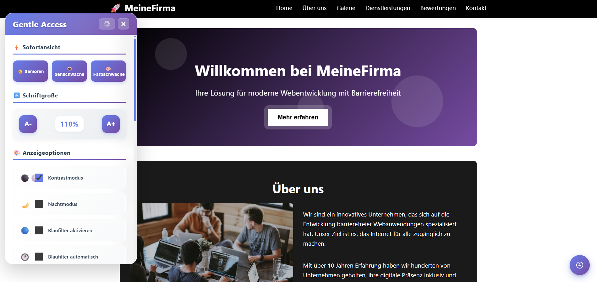

Gentle Access is an innovative web accessibility tool designed to make websites barrier-free and inclusive for all users. This React-based widget can be integrated into any website, providing comprehensive accessibility features that help users with visual impairments, color blindness, and other accessibility needs to navigate and interact with web content comfortably.

Key Features:
- Instant View (Sofortansicht): Quick access panel that provides immediate accessibility adjustments without navigating through multiple menus.
- Vision Profiles: Pre-configured accessibility profiles for different user groups including Seniors (Senioren), Visual Impairment (Sehschwäche), and Color Blindness (Farbschwäche).
- Font Size Control: Dynamic font size adjustment with A- and A+ buttons, displaying current scaling percentage (e.g., 110%) for precise control.
- Contrast Mode: High contrast display option that enhances text readability against backgrounds, particularly beneficial for users with low vision.
- Night Mode: Dark theme implementation that reduces eye strain during extended browsing sessions and improves readability in low-light conditions.
- Blue Light Filter: Adjustable blue light reduction feature with both manual activation and automatic scheduling options to reduce eye fatigue.
- Display Options (Anzeigeoptionen): Comprehensive set of visual customization options that can be toggled independently based on user preferences.
- Customizable Widget: Floating accessibility panel that can be positioned and customized to match the host website's design and branding.
Technical Specifications:
- Framework: Built with React and Vite for fast, modern, and efficient client-side rendering and optimal performance.
- Integration: Easy-to-implement widget that can be embedded into any existing website with minimal code changes.
- Styling: CSS-based styling system that applies accessibility modifications dynamically without affecting the original website structure.
- Responsive Design: Fully responsive accessibility controls that work seamlessly across desktop, tablet, and mobile devices.
- User Preferences: Local storage implementation to remember user accessibility settings across browsing sessions.
- Multi-language Support: Interface available in multiple languages (German interface shown) to support international audiences.
- Lightweight: Optimized bundle size ensuring minimal impact on website loading times and performance.
- Privacy-Focused: All accessibility settings are stored locally, ensuring user privacy and GDPR compliance.
Accessibility Features in Detail:
- Seniors Profile: Optimized settings for older users including larger fonts, higher contrast, and simplified navigation.
- Visual Impairment Profile: Enhanced readability with adjusted spacing, magnification options, and screen reader compatibility.
- Color Blindness Profile: Alternative color schemes and patterns that ensure information is not conveyed through color alone.
- Keyboard Navigation: Full keyboard accessibility support for users who cannot use a mouse or pointing device.
- Screen Reader Support: Proper ARIA labels and semantic HTML to ensure compatibility with assistive technologies.
- Settings Persistence: User preferences are automatically saved and restored on subsequent visits.
How It Works:
- Website owners integrate the Gentle Access widget into their site with a simple script inclusion.
- Users access the accessibility panel by clicking the floating widget icon, typically positioned in the corner of the screen.
- Users select their preferred accessibility options from the instant view or customize individual settings in the display options.
- The widget applies real-time modifications to the website's appearance and behavior without page reloads.
- Settings are automatically saved in the browser's local storage and persist across browsing sessions.
- Users can reset all settings to default or close the accessibility panel at any time using the control buttons.
Benefits:
- WCAG Compliance: Helps websites achieve and maintain Web Content Accessibility Guidelines (WCAG) 2.1 AA compliance.
- Inclusive Design: Makes web content accessible to users with diverse abilities and accessibility needs.
- Improved SEO: Accessibility improvements often correlate with better search engine optimization results.
- Legal Compliance: Assists in meeting legal requirements for digital accessibility in various jurisdictions.
- User Experience: Enhances overall user experience for all visitors, not just those with specific accessibility needs.